Embrace
A self-sizing, breathable, smart neck brace that prioritises patient comfort without compromising immobilisation. A device that feels like an extension of the self — not an intrusion.
The Problem
Standard emergency and post-surgical neck braces cause as much harm as they prevent. They trap heat and sweat, compress the jaw, and cause severe pressure ulcers on the chin and collarbones. Paramedics have to guess sizing under high-stress conditions — there are only a handful of standard sizes for the full range of human necks. Patients endure weeks of avoidable discomfort in a device not designed for their body, reducing compliance and increasing recovery time.
Comfort is not a luxury feature in medical equipment. It's compliance. Patients who aren't in pain wear their braces correctly.

Traditional cervical collar — one size rarely fits all
The Concept
Embrace takes a soft robotics approach — a spandex shell with sewn internal pockets housing inflatable McKibben actuators that automatically conform to the patient's neck when pressurised. A Velostat pressure sensor embedded in the fabric reads fit in real time, and a microcontroller controls the pump and solenoid valve until the correct pressure is reached independently in each zone.
Self-Sizing
McKibben pneumatic actuators — latex tubes inside braided mesh sleeves — expand radially when pressurised, distributing force evenly across the neck surface. No manual sizing. No guessing under pressure.
Breathable Shell
Pink spandex fabric chosen for both stretch and breathability — the elasticity accommodates inflation while the weave allows airflow, reducing the heat and sweat buildup that causes skin breakdown in long-term brace wear.
Smart Feedback
FSR pressure sensing detects under-tightening and over-tightening. The system inflates until target pressure is reached, then holds — no continuous monitoring needed from caregiver.
Design Intent
Research into current brace pressure points and FDA regulations informed every design decision. The goal: a device that is not only functional but humane — one that a patient would actually choose to wear.
System Architecture
Input
Velostat FSR
Handmade pressure sensor embedded in spandex fabric: reads contact force at neck interface continuously
Controller
XIAO ESP32-C3
Maps pressure to fit zones: too loose, good fit, too tight — controls pump and valves independently
Output A
Mini Air Pump
Pressurises the system, shared across all three actuator zones
Output B
3-Way Solenoid Valves
Distributes air to each McKibben actuator zone independently, timed for differential inflation
Actuator
McKibben Muscles
Handmade from latex tubing + braided mesh: expand radially under pressure to conform to the neck
Structure
Spandex Shell
Pink spandex sewn with internal pockets and sleeves: houses actuators and FSR in a wearable form
Building Embrace
A sewn spandex brace with embedded pressure sensing and pneumatic self-sizing — the first time all the components came together in a single wearable object.
01
Pattern & Materials
Drafted the flat pattern by hand, then cut and marked it in pink spandex — chosen for its stretch and breathability. Sewn on a machine for the first time, using a digital caliper to keep pocket dimensions consistent.
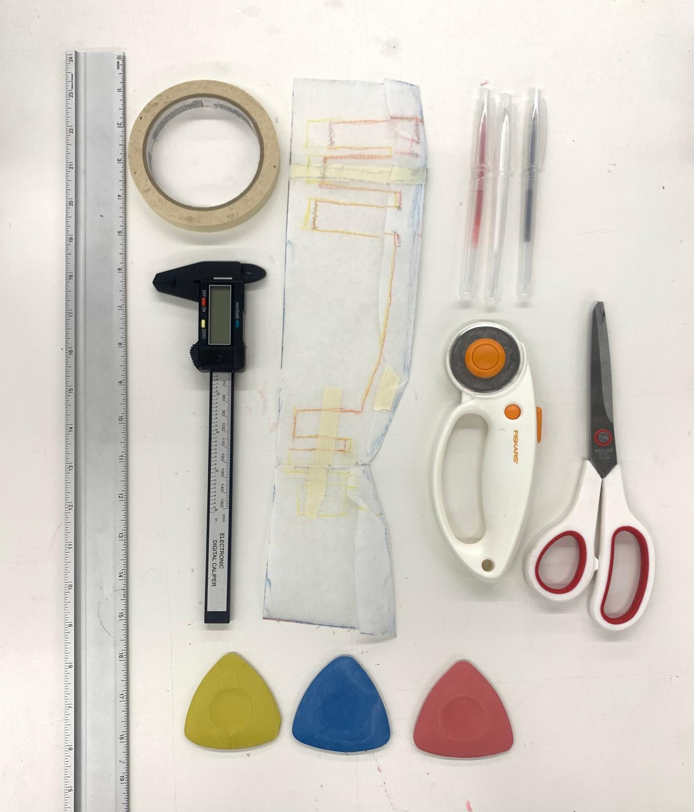
Tools and materials for the pattern and build
02
Embedding the FSR
The handmade Velostat/copper-tape pressure sensor is sandwiched directly into the fabric at the neck contact point, wired out through the shell before the pockets are closed up.
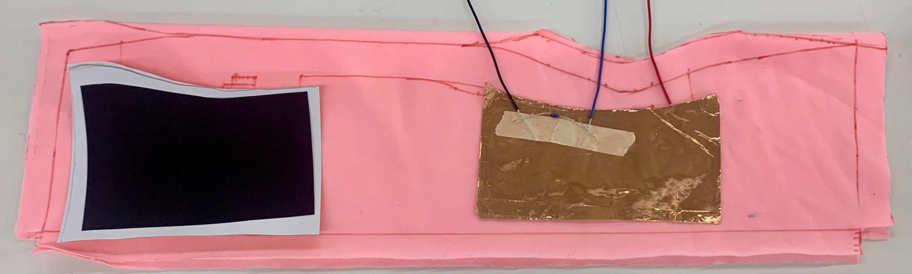
FSR sandwich embedded into the fabric, wired out for the controller
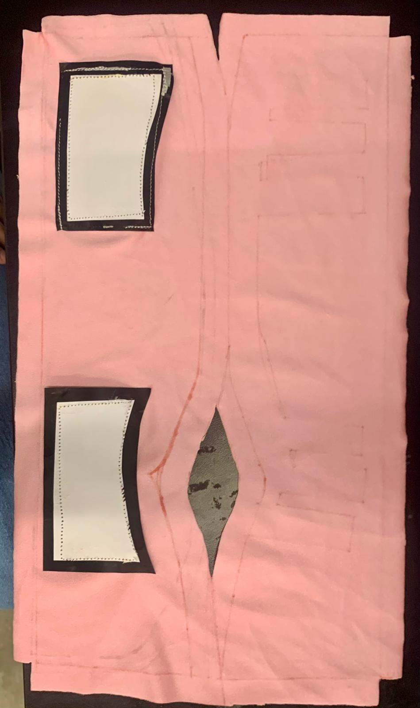
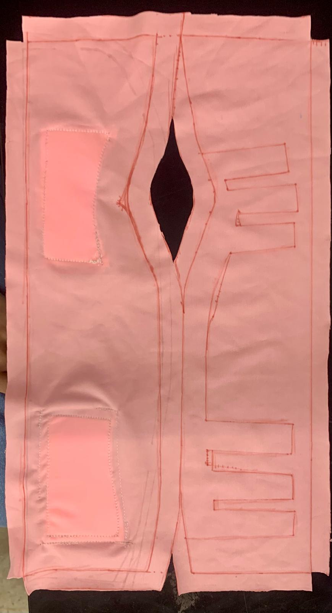
Sensor pockets and the actuator sleeve opening, sewn into the pattern
03
Assembling the Actuators
Three McKibben actuator zones, each fed by its own tubing run: two smaller actuators sit at the front of the neck, and one larger actuator wraps the back — sized and routed to inflate to different targets from the same shared pump.
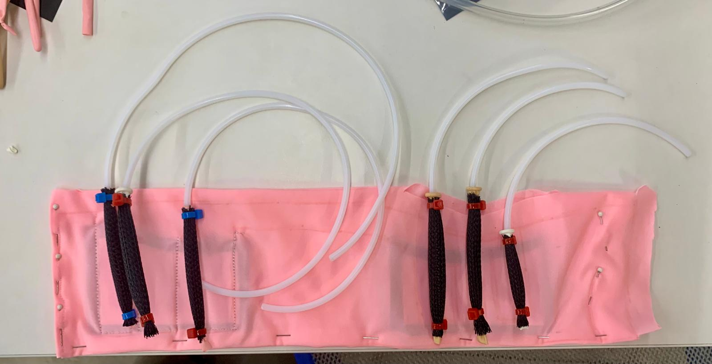
Actuators seated in their pockets, tubing routed out to the valve manifold
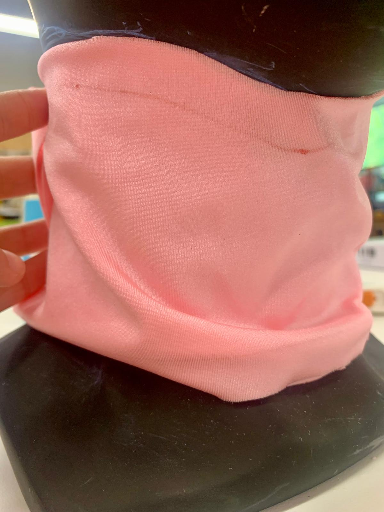
Early fit test on a mannequin bust with tailer's chalk markings for precision
The template creation process to make the flat pattern
04
The Circuit: Pump + Solenoids + MOSFETs
A XIAO ESP32-C3 reads the FSR on an analog pin and drives the pump and three solenoid valves through their own MOSFET stages — a boost converter steps the supply up for the pump and valves while the XIAO runs on its own 3.3V logic. The front and back zones are timed independently so the front stays at a lower inflation than the back.
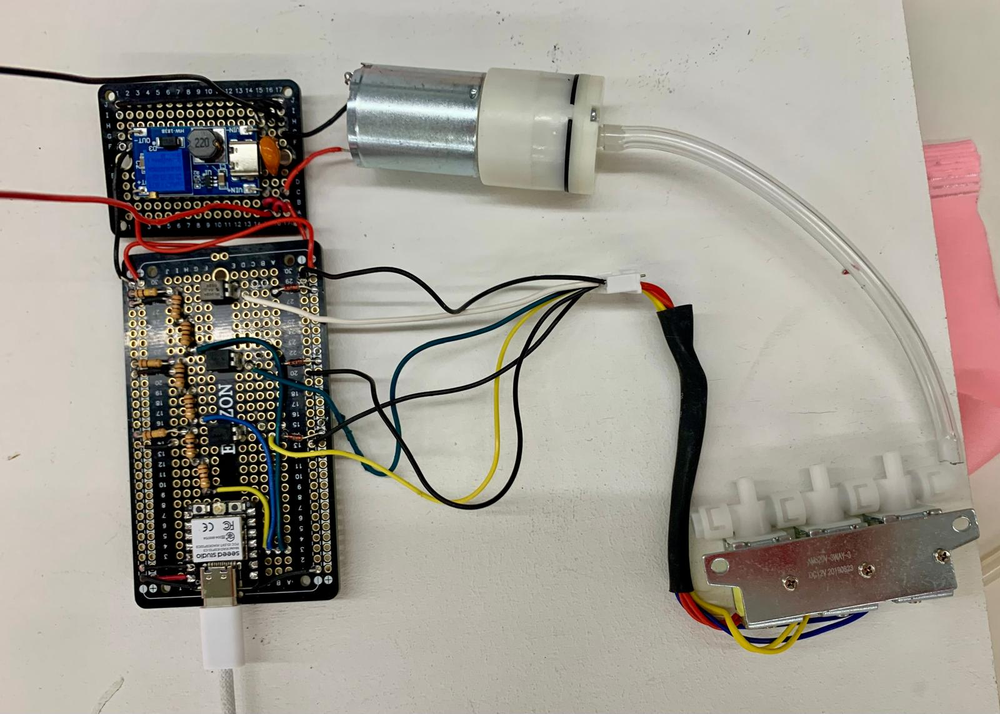
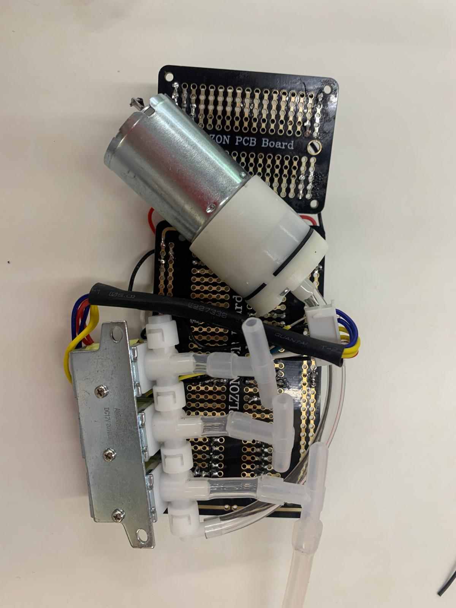
The final circuit — pump, valve manifold, and driver electronics
The moment the closed loop finally worked end to end — FSR reading, pump responding
Code
C++ for XIAO ESP32-C3. Uses a C++ class structure,
millis() for non-blocking timing — no
delay() calls. Closed-loop: FSR reads
pressure, pump inflates until target, solenoids hold.
Presenting Embrace
Embrace showed at the PS70 final exhibition, presented alongside Professor Nathan Melenbrink.
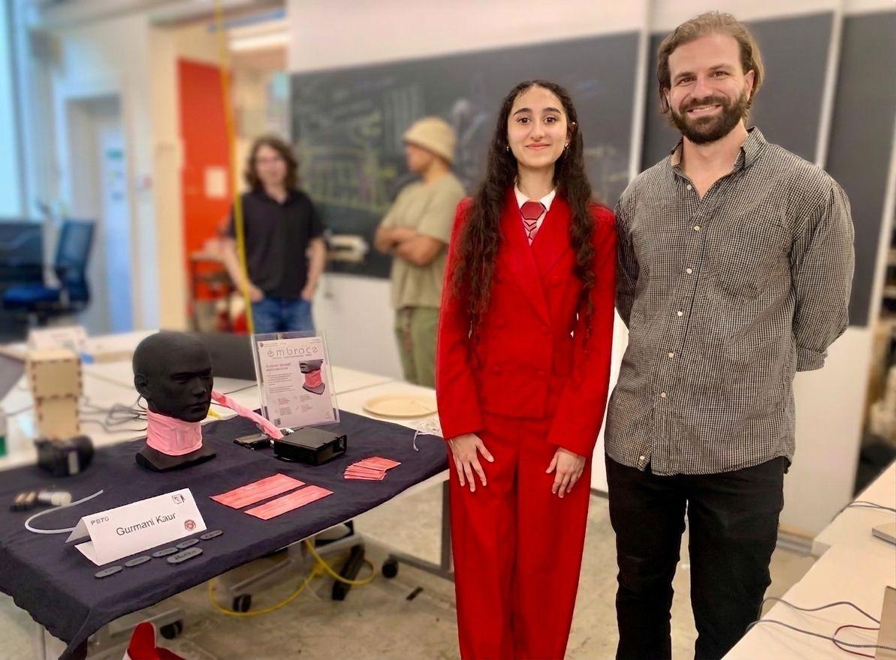
With Professor Nathan Melenbrink at the final exhibition
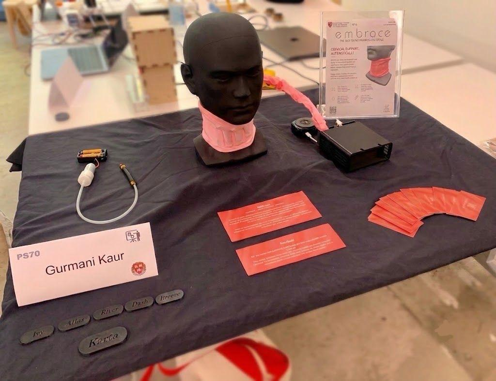
The final table — brace on display, persona tags, poster, and NFC cards
The Personas
For the live walkthrough, six 3D-printed name tags stood in for six personas — each one framing a different way someone interacts with Embrace, used to guide the audience through the product feature by feature.
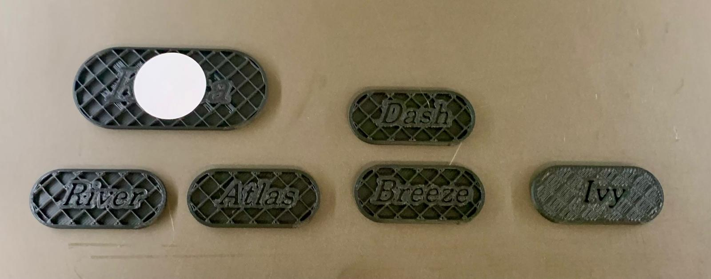
The persona name tags, fresh off the printer
Karta — the tap-to-connect card
Karta means "creator." Its tag has an NFC chip embedded inside, written with a LinkedIn link. Every visitor's demo ended the same way: phones out, a tap of the Karta tag against the screen, and an instant connection request — a small piece of "magic" to close on.
Bill of Materials
| # | Component | Purpose | Category | Qty |
|---|---|---|---|---|
| 1 | XIAO ESP32-C3 | Microcontroller — reads FSR, controls pump and solenoids | Electronics | 1 |
| 2 | Velostat + copper tape FSR | Pressure sensing at neck interface | Sensing | 1 |
| 3 | Handmade McKibben actuators | Self-sizing pneumatic bladders — latex tube + braided mesh | Pneumatics | 6 |
| 4 | Mini air pump | Pressurises the system, shared across all zones | Pneumatics | 1 |
| 5 | 3-way solenoid valves | Independent air distribution per actuator zone | Pneumatics | 3 |
| 6 | N-channel MOSFETs (IRLZ44N) | Drive pump and valves from 3.3V logic | Electronics | 4 |
| 7 | 10kΩ resistor | FSR voltage divider | Electronics | 1 |
| 8 | Flyback diodes (1N4007) | Protect MOSFETs from solenoid/pump back-EMF | Electronics | 4 |
| 9 | Boost converter module | Steps supply voltage up for pump and solenoids | Electronics | 1 |
| 10 | Pink spandex fabric | Brace shell — stretch, breathability, calming colour | Structure | ~0.5m |
| 11 | Pneumatic tubing + connectors | Air routing from pump to solenoids to actuators | Pneumatics | — |
| 12 | 3D-printed persona tags + NFC chip | Presentation aids — persona walkthrough and the Karta tap-to-connect card | Structure | 6 |